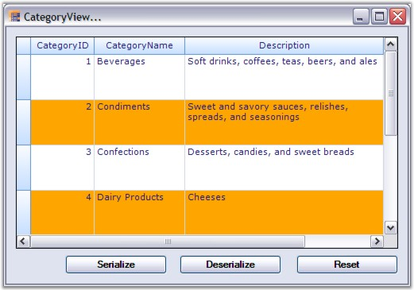
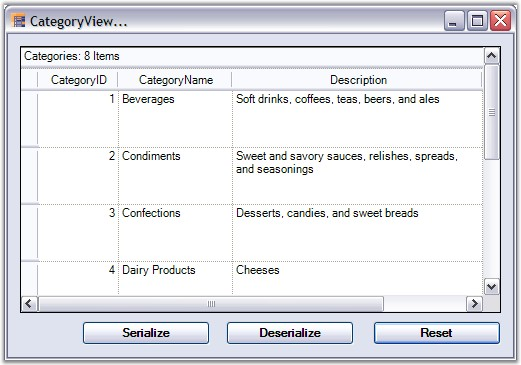
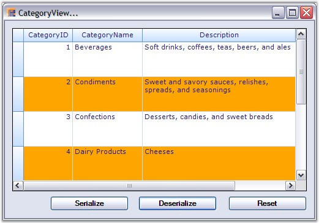
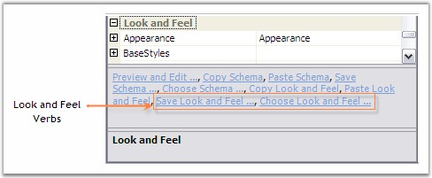

With XmlSerialization, the grid schema information can be converted into Xml format. Grouping Grid provides two methods to support Xml Serialization.
· WriteXmlSchema - It writes the engine settings into an Xml stream(Serialization).
· ApplyXmlSchema - It loads the engine settings from an Xml stream(Deserialization).
All the grid elements can be serialized. Not only the data but also the look and feel of the grid can be serialized and deserialized. The following code example best illustrates this process.
Example
1. Setup a grouping grid and load it with some data. Save the initial state of the grid schema so that it could be used to reset the grid.
|
[C#]
// Knowing the initial state. System.IO.MemoryStream stream; stream = new System.IO.MemoryStream(); this.gridGroupingControl1.WriteXmlSchema(new XmlTextWriter(stream, null)); |
|
[VB.NET]
' Knowing the initial state. Private stream As System.IO.MemoryStream stream = New System.IO.MemoryStream() Me.gridGroupingControl1.WriteXmlSchema(New XmlTextWriter(stream, Nothing)) |
2. Apply the look and feel properties that you desire.
|
[C#]
// Customize the Appearance. this.gridGroupingControl1.TableOptions.GridVisualStyles = GridVisualStyles.Office2007Blue; this.gridGroupingControl1.TableOptions.GridLineBorder = new GridBorder(GridBorderStyle.Solid, Color.FromArgb(208, 215, 229), GridBorderWeight.Thin); this.gridGroupingControl1.TopLevelGroupOptions.ShowCaption = false; this.gridGroupingControl1.Appearance.AnyCell.Font.Facename = "Verdana"; this.gridGroupingControl1.Appearance.AnyCell.TextColor = Color.MidnightBlue; this.gridGroupingControl1.TableDescriptor.Appearance.AlternateRecordFieldCell.Interior = new BrushInfo(Color.Orange); |
|
[VB.NET]
' Customize the Appearance. Me.gridGroupingControl1.TableOptions.GridVisualStyles = GridVisualStyles.Office2007Blue Me.gridGroupingControl1.TableOptions.GridLineBorder = New GridBorder(GridBorderStyle.Solid, Color.FromArgb(208, 215, 229), GridBorderWeight.Thin) Me.gridGroupingControl1.TopLevelGroupOptions.ShowCaption = False Me.gridGroupingControl1.Appearance.AnyCell.Font.Facename = "Verdana" Me.gridGroupingControl1.Appearance.AnyCell.TextColor = Color.MidnightBlue Me.gridGroupingControl1.TableDescriptor.Appearance.AlternateRecordFieldCell.Interior = New BrushInfo(Color.Orange) |
3. Create a button name 'Serialize', clicking which will start the serialization process. Add the below code into the ButtonClick event handler. This will save the grid schema into an Xml file.
|
[C#]
// Serialization private void Serialize_Click(object sender, System.EventArgs e) { FileDialog dlg = new SaveFileDialog(); dlg.AddExtension = true; dlg.Filter = "xml files (*.xml)|*.xml|All files (*.*)|*.*"; if (dlg.ShowDialog() == DialogResult.OK) { XmlTextWriter xw = new XmlTextWriter(dlg.FileName, System.Text.Encoding.UTF8); xw.Formatting = System.Xml.Formatting.Indented; this.gridGroupingControl1.WriteXmlSchema(xw); xw.Close(); } } |
|
[VB.NET]
' Serialization Private Sub Serialize_Click(ByVal sender As Object, ByVal e As System.EventArgs) Handles btnSaveXmlSchema.Click Dim dlg As FileDialog = New SaveFileDialog() dlg.AddExtension = True dlg.Filter = "xml files (*.xml)|*.xml|All files (*.*)|*.*" If dlg.ShowDialog() = DialogResult.OK Then Dim xw As XmlTextWriter = New XmlTextWriter(dlg.FileName, System.Text.Encoding.UTF8) xw.Formatting = System.Xml.Formatting.Indented Me.gridGroupingControl1.WriteXmlSchema(xw) xw.Close() End If End Sub |
4. Create another button named 'Deserialize' to deserialize the grid. The following code will help you to load the grid schema back from an Xml file.
|
[C#]
// Deserialization private void btnLoadXmlSchema_Click(object sender, System.EventArgs e) { FileDialog dlg = new OpenFileDialog(); dlg.Filter = "xml files (*.xml)|*.xml|All files (*.*)|*.*"; if (dlg.ShowDialog() == DialogResult.OK) { XmlReader xr = new XmlTextReader(dlg.FileName); this.gridGroupingControl1.ApplyXmlSchema(xr); xr.Close(); } } |
|
[VB.NET]
' Deserialization Private Sub btnLoadXmlSchema_Click(ByVal sender As Object, ByVal e As System.EventArgs) Handles btnLoadXmlSchema.Click Dim dlg As FileDialog = New OpenFileDialog() dlg.Filter = "xml files (*.xml)|*.xml|All files (*.*)|*.*" If dlg.ShowDialog() = DialogResult.OK Then Dim xr As XmlReader = New XmlTextReader(dlg.FileName) gridGroupingControl1.ApplyXmlSchema(xr); xr.Close() End If End Sub |
5. Create a third button named 'Reset' which will reset the look and feel of the grid.
|
[C#]
// Reset Grid. private void reset_Click(object sender, System.EventArgs e) { System.IO.MemoryStream stream2 = new System.IO.MemoryStream(stream.ToArray()); this.gridGroupingControl1.ApplyXmlSchema(new XmlTextReader(stream2)); } |
|
[VB.NET]
' Reset Grid. Private Sub reset_Click(ByVal sender As Object, ByVal e As System.EventArgs) Handles reset.Click Dim stream2 As System.IO.MemoryStream = New System.IO.MemoryStream(stream.ToArray()) Me.gridGroupingControl1.ApplyXmlSchema(New XmlTextReader(stream2)) End Sub |
6. While running the sample, click the Serialize button and save the grid schema into an Xml file. Then click Reset button to switch the grid to its default state. It removes all the appearance settings done in first step. You can also make changes in the TableDescriptor of the grid manually like rearranging columns through drag and drop so that after reloading the grid schema, you could notice that the entire grid schema has been serialized. Reloading will transform the grouping grid back to the state before serialization.

Figure 371: Startup Screen - Click Serialize to save Grid Schema

Figure 372: After Serialization, reset the Grid

Figure 373: Restoring the Grid Schema by Deserialization
Note: For more details, refer the following browser samples:
<Install Location>\Syncfusion\EssentialStudio\[Version Number]\Windows\Grid.Grouping.Windows\Samples\2.0\Serialization\XML Serialization Demo
<Install Location>\Syncfusion\EssentialStudio\[Version Number]\Windows\Grid.Grouping.Windows\Samples\2.0\Serialization\Employee View Xml Demo
Saving / Restoring Look and Feel Properties
You can save, look and feel properties in XML format. This will allow you to design a basic look and feel to use with all your Grid Grouping controls and then easily apply this look and feel to new grids at design-time or run-time.
It can be done in the following ways.
· Through Verbs
· Through Code
Through Verbs
The verbs "Save Look and Feel" and "Choose Look and Feel" that are found at the bottom of the property grid of the Grid Grouping control will allow you to easily accomplish this task. Use the Save verb to save the Look and Feel properties of the current Grid Grouping control. Then use the Choose verb to apply the saved settings to a different control.

Figure 374: Look and Feel Customization Options
Through Code
To apply the Look and Feel properties saved as XML at run-time, simply call ApplyXmlLookandFeel method. For example, the code below shows the code that is necessary to load such a file in the form's constructor.
|
[C#]
public Form1() { System.Xml.XmlReader xr = new System.Xml.XmlReader("BaseLandF.xml"); this.gridGroupingControl1.ApplyXmlLookAndFeel(xr); } |
|
[VB.NET]
Public Sub New() Dim xr As System.Xml.XmlReader = New System.Xml.XmlReader("BaseLandF.xml") Me.gridGroupingControl1.ApplyXmlLookAndFeel(xr) End Sub |